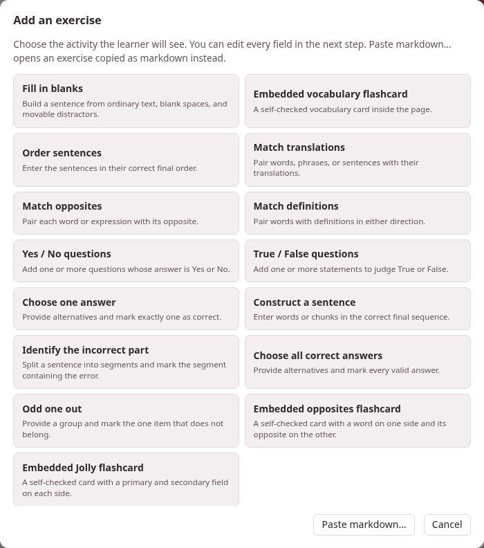

Writing exercises
A studio document can hold exercises: a sentence with blanks to fill, words to match, statements to judge, flashcards to turn. Each is a block of Markdown between :::exercise and :::, written in the same text as the rest of the page, and each is drawn three ways from that one text:
- on the page, where the learner answers it and Check exercises at the end of the page marks it;
- on paper, in the document’s PDF, laid out to be answered with a pen;
- in an exercise deck, where it comes back when it is due, as a card does in Anki.
This section is the reference for that block. Every example in it is live: answer it, then press Check exercises at the foot of the page.
target: it:::exercise single-choiceprompt: Which word means *house*?- [ ] [libro]{tl}- [x] [casa]{tl}- [ ] [acqua]{tl}explanation-correct: [casa]{tl} = *house*; [libro]{tl} is a book, [acqua]{tl} is water.:::1. The thirteen types#
The word after :::exercise names the type. The types come in four families, and the members of a family share their machinery — how their rows are written, how they are answered and how they are checked — while the type says what the exercise is for. The table goes family by family: three placement types, three matching, six choice, and the flashcard. Each type leads to its own section.
| Type | The learner… | Its label on the page |
|---|---|---|
fill-blanks | drags words into the blanks of a sentence | Fill the blanks |
order-sentences | puts sentences in order | Order the sentences |
construct-sentence | builds a sentence from its words | Construct the sentence |
match-translations | joins each word to its translation | Match translations |
match-opposites | joins each word to its opposite | Match opposites |
match-definitions | joins each word to its definition | Match words and definitions |
yes-no | answers each question Yes or No | Yes or no |
true-false | judges each statement True or False | True or false |
single-choice | picks the one right answer | Choose one answer |
incorrect-part | picks the part of a sentence that is wrong | Identify the incorrect part |
choose-all | picks every right answer | Choose all correct answers |
odd-one-out | picks the one that does not belong | Odd one out |
flashcard | turns a card over | Flashcard |
The PDF heads each exercise with the same label, except three that it shortens: Match definitions for match-definitions, Yes / No for yes-no and True / False for true-false.
Twelve are scored: Check exercises marks them right or wrong and counts them in the page’s score. A flashcard is not: the learner turns it and judges for themselves, and a card comes in three kinds of its own (card-type: vocab, opposites and jolly).
2. Three ways to write one#
You never have to type the Markdown yourself, although you always may.
- The form. In the studio’s editor, Exercises ▾ → Add exercise… opens a grid of the activities — the thirteen types, with the flashcard as its three kinds: Embedded vocabulary flashcard, Embedded opposites flashcard and Embedded Jolly flashcard. Choose one and a form opens with every field the type takes, a live Preview at its foot, and Insert exercise, which writes the block into the document at the cursor, on lines of its own. The form checks what the parser would refuse before it lets you insert it — a blank with no answer, a choice with no right one — and says what is missing. In the editor’s preview every exercise has ✎ Edit, which reopens it in the same form, and Save exercise puts it back where it was — except one inside a
>box, which has no ✎ Edit and is edited in the Markdown. The form writes the exercise afresh as it saves: a fill-in exercise’s own blank names and row order do not survive it. - Pasting. Paste markdown…, under the grid, takes one
:::exerciseblock — copied from another document, or from a book’s or a video’s card sheet — and opens it in the form to look over; Ctrl+V on the grid does the same at once. Exercises ▾ → Load from a deck… puts an exercise from one of your decks into the page, with its pictures and recordings. - An LLM. Exercises ▾ → Generate with LLM… copies a prompt that teaches this whole dialect to a language model, with your page after it (and, if you tick them, the words your Anki decks already hold): press Copy complete prompt and give it to the model. It answers with the whole page, exercises added after the material they test; paste that into the editor in place of the old text, and look it over.

Every text box in the form has its own ⇤ RTL / ⇥ LTR button, which turns the box to write right to left or left to right; it changes only how you type in it, not the exercise. ∑ Maths… writes a formula into the field you were last in.
3. A page to start from#
+ New, in the studio’s library, starts a document from the starter page of the language the toolbox is set to, and each of the eleven starters has a section Exercises holding every type and all three kinds of card, written in that language — the quickest way to see how an exercise in Arabic, Hindi or Japanese is written. Several of its exercises show the starters’ pictures, an apple and a house, and four play a chime — one with its question, one once it is answered, and two cards: the same files this section’s examples use. They become the document’s own when it is saved. Keep the exercises you need and delete the rest.
4. Where to read on#
- The exercise block: the grammar every type shares — the opening line, fields, rows, blanks, comments — and what happens when something is wrong.
- Fields every exercise takes: the prompt, the explanations, a picture and a recording for the question and for the answer, and the direction the activity is laid out in.
- One page per family, every type on it with its syntax, a live example, how it is checked, what the PDF shows and how it goes into a deck: placement, matching, choice and flashcards.
- Exercises on paper: the PDF, its print sizes for readers with low vision, black and white for the photocopier, and the layouts a student writes on.
- Exercises in a deck: from a page into an exercise deck and back, and how each family is studied there.
The same pages of the guide can hold exercises of their own, and that is how the examples here are made: see the Parseh dialect in Writing this guide.